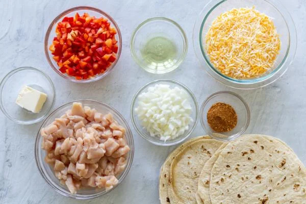
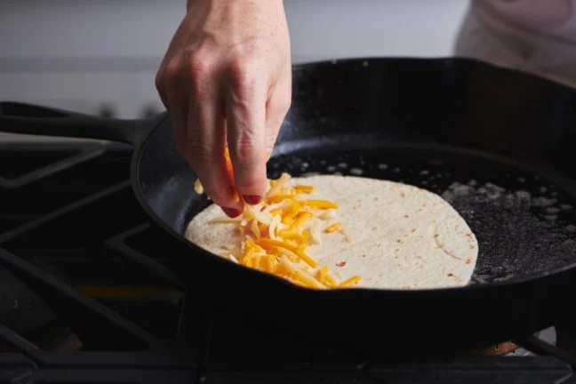
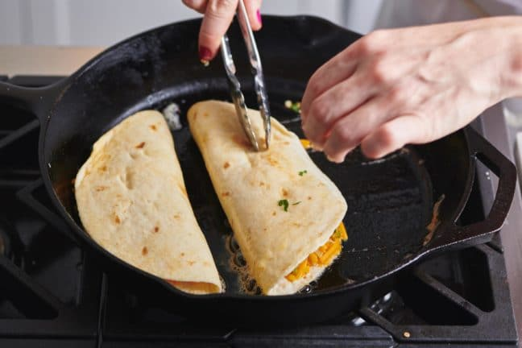
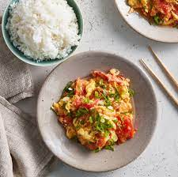

Chicken Quesadilla
Origin: Mexican
Source: Well Plated
Category: Main Dish
{kind=link}
A plain cheese quesadilla of the white tortilla + prebagged cheese + microwave-until-melted variety can be made a bit of a joke when describing someone’s ability to “cook,” but this juicy chicken quesadilla is well-above basic.
Recipe Ingredients
- Chicken
- Cheese
- Veggies
- Spices
- Hot sauce
- Whole wheat tortilla
- Toppings
Recipe Steps
- Add the chicken to a bowl, then stir in half of the spices.
- Sauté the vegetables with spices.
- Assemble the quesadillas by piling the fillings onto one half of a tortilla.
- Fold the empty tortilla half over the top. Repeat.
- Cook the quesadillas two at a time in a skillet.
- Flip after about 4 minutes, cooking on the other side for a few minutes. Let cool, slice, and DIG IN!
Additional Food Images
  Double Chocolate Cookies
Origin: Michigan
Source: Family Recipe
Category: Dessert

My daughter learned to make these cookies at a baking camp at Zingermanns and has tweaked the recipe to fit the taste buds of her siblings. They are extremely sugary so the salt helps to balance it. Note, these cookies are best eaten very quickly.
Recipe Ingredients
- Unsalted butter
- Granulated Sugar
- Packed light or dark brown sugar
- Large egg
- Pure vanilla extract
- Semi-sweet chocolate chunks (melted)
- All-purpose flour
- Natural unsweetened cocoa powder
- Baking soda
- Salt
- Semi-sweet chocolate chunks
Recipe Steps
- In a mixing bowl cream together the butter, granulated sugar, and brown sugar
- Add the egg and vanilla extract and beat well
- Add the melted chocolate
- In a separate bowl combine the flour, baking soda, cocoa powder and salt
- Combine the wet and dry ingredients
- Add the unmelted chocolate chunks.
- Form 15 cookies and place on a baking sheet.
- Cook for 12 to 13 minutes at 350 degrees.
Additional Food Images


Tomato Basil Pasta
Origin: Italian
Source: Bon Appetit
Category: Main Dish

This recipe is a fantastic way to step up your pasta game without taking too much more of your time. It tastes way better than basic pasta with jarred sauce! I originally found this when my sister made it, and got the recipe off of Bon Appetit’s website. PS avoid using the shaker parmesan – I used that the first time I made this and it drew down the quality of the dish.
Recipe Ingredients
- pasta
- tomatoes (any larger than cherry)
- basil
- red wine vinegar
- extra virgin olive oil
- crushed red pepper
- finely grated block of parmesan
Recipe Steps
- cut tomatoes along equator
- squeeze juice and seeds out of tomatoes and discard
- cut juiced tomatoes into small-ish pieces
- smush down with large spoon to release some leftover juices
- add in vinegar, olive oil, crushed red pepper and half of parmesan
- let marinate for half an hour
- add basil
- cook pasta
- toss marinade with cooked pasta and serve topped with remaining parmesan
Additional Food Images


Tomato and Eggs
Origin: China
Source: Own Recipe
Category: Main Dish

Tomato and eggs is a hot dish which originated from China. It is a simple and fast dish to make, but it has good nutritional value. It is a very satisfying food to eat and popularly served with rice and topped with green onions.
Recipe Ingredients
- Tomatoes
- Eggs
- Salt
- Sugar
- Cooking oil
Recipe Steps
- Crack eggs into a bowl and mix until scrambled
- Cut tomatoes into pieces around the size of your thumb
- Oil a hot pan and cook the eggs until satisfied then remove the eggs
- Re-oil the pan and cook the tomatoes until they loosen
- Combine eggs and tomatoes and season with salt and sugar
Additional Food Images


Matcha Cookies
Origin: Japanese
Source: Just One Cookbook
Category: Dessert

These cookies have the perfect flavor balance of the earthiness from the matcha and the sweetness and creaminess from the white chocolate chips. They are crispy and sweet, perfect for an afternoon snack or dessert. Enjoy with a cup of tea!
Recipe Ingredients
- All purpose flour
- Matcha powder
- Unsalted butter
- Kosher salt
- Confectioners sugar
- Egg yolks
- White chocolate chips
Recipe Steps
- Combine flour and matcha powder in large bowl
- Sift the flour and matcha powder
- Beat softened butter until smooth and creamy
- Add salt and blend
- Add sugar and beat until soft and light
- Add egg yolks and mix until well combined
- Gradually add flour and matcha mixture and mix until well combined
- Add chocolate chips and mix until incorporated
- Divide dough into two pieces. Shape each piece into cylinders about 1.5in in diameter
- Wrap logs in plastic wrap and chill in fridge for at least two hours
- Slice into ⅓ inch rounds and place on a baking tray lined with parchment paper
- Bake at 350 degrees for 15 minutes
Additional Food Images